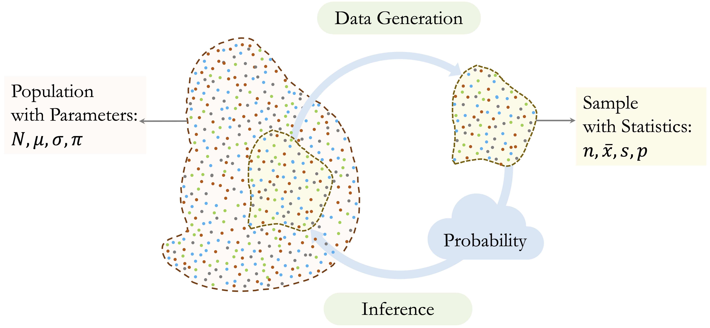

5 Statistical Inference and Hypothesis Testing
Statistics is the science of uncertainty.
Imagine a bank notices that customers who contact customer service frequently appear more likely to close their credit card accounts. Is this pattern evidence of a genuine underlying relationship, or could it simply reflect random variation in the data? Questions like these lie at the heart of statistical inference.
Statistical inference uses information from a sample to draw conclusions about a broader population. It enables analysts to move beyond the descriptive summaries of exploratory data analysis and toward evidence-based decision-making. In practice, inference helps answer questions such as: What proportion of customers are likely to churn? and Do churners make more service contacts on average than non-churners?
In Chapter 4, we examined the churn dataset and identified several promising patterns. For example, customers with more frequent service contacts or lower spending levels appeared more likely to churn. However, EDA alone cannot tell us whether these differences reflect genuine population-level effects or are merely artifacts of sampling variability. Statistical inference provides the framework to make such distinctions in a principled way.
This chapter emphasizes that sound inference relies on more than formulas or computational steps. It requires critical thinking: recognizing how randomness influences observed data, understanding the limitations of sample-based conclusions, and interpreting results with appropriate caution. Misunderstandings can lead to misleading or overconfident claims, a theme highlighted in Darrell Huff’s classic book How to Lie with Statistics. Strengthening your skills in statistical reasoning will help you evaluate evidence rigorously and draw conclusions that are both accurate and defensible.
What This Chapter Covers
This chapter introduces statistical inference, a set of methods that allow us to draw conclusions about populations using information from samples. Building on the exploratory work of earlier chapters, the focus now shifts from identifying patterns to evaluating whether those patterns reflect meaningful population-level effects. This transition is a central step in the data science workflow, where initial insights are tested and uncertainty is quantified.
The chapter begins with point estimation, where sample statistics are used to estimate unknown population parameters. It then introduces confidence intervals, which provide a principled way to express the uncertainty associated with these estimates. Hypothesis testing follows, offering a framework for assessing whether observed differences or associations are likely to have arisen by chance. Along the way, you will work with several real-world datasets, including churn and diamonds in the main text, and the bank, churn_mlc, and marketing datasets from the liver package in the exercises.
Throughout the chapter, you will apply these inferential tools in R to evaluate patterns, interpret p-values and confidence intervals, and distinguish statistical significance from practical relevance. These skills form the basis for reliable, data-driven conclusions and support the Modeling work that follows.
The chapter concludes by revisiting how statistical inference supports later phases of the data science workflow, including validating data partitions and assessing feature relevance for Modeling, topics that will be developed further in Chapter 6.
5.1 Introduction to Statistical Inference
Statistical inference connects what we observe in a sample with what we seek to understand about the broader population, as illustrated in Figure 5.1. It occupies a central position in the Data Science Workflow (see Figure 2.3), following exploratory data analysis and preceding predictive Modeling. While exploratory data analysis helps reveal potential patterns, such as the higher churn rates among customers with many customer service interactions in the churn dataset (via contacts_count_12), inference provides a formal framework for evaluating whether these patterns reflect genuine population-level effects or are likely to have arisen by chance.
Inference also plays an important role in later stages of the workflow. For example, hypothesis testing can help verify that training and test sets retain key characteristics of the full dataset, as discussed in Chapter 6.
As summarized in Figure 5.2, statistical inference is built around three core components:
Point estimation: Estimating population parameters (e.g., the mean or proportion) using sample data.
Confidence intervals: Quantifying uncertainty around these estimates.
Hypothesis testing: Assessing whether observed effects are statistically significant or likely due to chance.

These components build on one another: estimation provides a starting point, confidence intervals express the associated uncertainty, and hypothesis testing offers a structured approach to evaluating whether observed effects are statistically meaningful. Together, they allow analysts to move beyond description toward evidence-based conclusions. The remainder of this chapter introduces each component in turn, beginning with point estimation and progressing through confidence intervals and hypothesis testing, supported by worked examples and applications in R.
5.2 Point Estimation
When analyzing sample data, an essential first step in statistical inference is to estimate characteristics of the population from which the sample is drawn. These characteristics include quantities such as the average number of customer service contacts, the typical transaction amount, or the proportion of customers who churn. Because we rarely have access to the entire population, we rely on point estimates derived from sample data.
A point estimate is a single numerical value that serves as our best guess for a population parameter. For example, the sample mean is a point estimate of the population mean, and the sample proportion is a point estimate of the population proportion. In the context of the churn dataset, such estimates help quantify patterns observed during exploratory analysis. For instance, we might estimate the proportion of customers who churn or assess the average annual spending among those who leave the service.
These estimates form the foundation for interval estimation and hypothesis testing, which incorporate uncertainty and offer tools for formal decision-making. We begin with simple examples of point estimation using familiar summaries from the churn dataset.
Example: Estimating the proportion of churners in the customer population.
library(liver)
data(churn)
# Compute the sample proportion of churners
prop.table(table(churn$churn))["yes"]
yes
0.1606596The estimated proportion of churners is 0.16. This value provides a sample-based estimate of the true proportion in the wider customer population.
Example: Estimating the average annual transaction amount among churners.
# Filter churners
churned_customers = subset(churn, churn == "yes")
# Calculate the sample mean
mean(churned_customers$transaction_amount_12)
[1] 3095.026The average annual transaction amount among churners is 3095.03. This sample mean serves as a point estimate of the corresponding population mean.
While point estimates are informative, they do not communicate how precise those estimates are. Without accounting for uncertainty, we risk mistaking random variation for meaningful insight, a common pitfall when interpreting small or noisy datasets. Confidence intervals address this limitation by providing a principled way to express uncertainty and assess the reliability of our estimates. The next section introduces confidence intervals and explores questions such as: How close is our estimate likely to be to the true value? and What range of values is supported by the data?
5.3 Confidence Intervals: Quantifying Uncertainty
Suppose the exploratory analysis in the churn dataset suggests that churned customers make fewer transactions than active customers. A natural follow-up question is: how precise is our estimate of the average transaction amount among churners? Could the true average be noticeably higher or lower? A single number rarely tells the whole story. This is where confidence intervals become essential.
Confidence intervals quantify the uncertainty associated with estimates of population parameters. Rather than reporting only a point estimate, such as “the average annual transaction amount for churners is $3,900,” a confidence interval might state that “we are 95 percent confident that the true average lies between $3,780 and $4,020.” This range incorporates the natural sampling variation present whenever we work with data from a subset rather than an entire population.
Formally, a confidence interval combines a point estimate (such as a sample mean or proportion) with a margin of error that reflects expected sampling variability. The general form is: \[ \text{Point Estimate} \pm \text{Margin of Error}. \]
For a population mean, the confidence interval is often calculated using: \[ \bar{x} \pm z_{\alpha/2}\left(\frac{s}{\sqrt{n}}\right), \] where \(\bar{x}\) is the sample mean, \(s\) the sample standard deviation, \(n\) the sample size, and \(z_{\alpha/2}\) the critical value from the standard normal distribution (for example, 1.96 for a 95 percent confidence level).

Several factors influence the width of a confidence interval. Larger sample sizes typically produce narrower intervals, reflecting more precise estimates. Greater variability leads to wider intervals, indicating more uncertainty. The confidence level also plays a role: a 99 percent interval is wider than a 90 percent interval because it must accommodate a broader range of plausible values.
To illustrate these ideas, we construct a 95 percent confidence interval for the average annual transaction amount among churned customers in the churn dataset:
# Identify churned customers
churned_customers = subset(churn, churn == "yes")
# Calculate mean and standard error
mean_amount <- mean(churned_customers$transaction_amount_12)
se_amount <- sd(churned_customers$transaction_amount_12) / sqrt(nrow(churned_customers))
# Confidence interval
z_score <- 1.96 # For 95 percent confidence
ci_lower <- mean_amount - z_score * se_amount
ci_upper <- mean_amount + z_score * se_amount
cat("95% Confidence Interval: (", ci_lower, ",", ci_upper, ")")
95% Confidence Interval: ( 2982.865 , 3207.187 )The resulting interval (2982.87, 3207.19) indicates that we are 95 percent confident the true average annual transaction amount for churned customers lies within this range. More formally, if we were to draw many random samples and compute an interval from each, approximately 95 percent of those intervals would contain the true population mean.
An alternative is to use the z.conf() function from the liver package, which computes the interval directly:
z.conf(churned_customers$transaction_amount_12, conf = 0.95)
[1] 2982.784 3207.268Confidence intervals also play an important role when comparing groups. For instance, if the confidence intervals for churners and non-churners differ substantially or show little overlap, this suggests meaningful differences in behavior worthy of further investigation. By providing a range of plausible values, confidence intervals offer a transparent measure of uncertainty and help avoid over-interpretation of single-number summaries.
In the next section, we extend these ideas through hypothesis testing, a formal framework for assessing whether observed patterns in a sample are likely to reflect genuine differences in the population or could plausibly arise by random chance.
5.4 Hypothesis Testing
Suppose a bank introduces a new customer service protocol and wants to know whether it reduces churn. After implementing the change for a subset of customers, analysts observe a slightly lower churn rate in the treated group. But is this difference meaningful, or could it simply be due to chance? Hypothesis testing provides a structured framework for addressing such questions.
Within the data science workflow, hypothesis testing forms a bridge between exploratory observations and formal evidence. For example, Chapter 4.3 showed that churn tends to be higher among customers with low spending and few transactions. Hypothesis testing allows us to examine whether such patterns are statistically credible or could have arisen from sampling variability.
Hypothesis testing evaluates claims about population parameters using sample data. Whereas confidence intervals offer a range of plausible values for an estimate, hypothesis testing evaluates whether the observed evidence supports a specific claim. The overall logic of this decision-making process is summarized in Figure 5.4.

The framework is built around two competing statements:
The null hypothesis (\(H_0\)): the default assumption that there is no effect, difference, or association.
The alternative hypothesis (\(H_a\)): the competing claim that an effect or difference does exist.
To assess the strength of evidence against \(H_0\), we calculate a p-value: the probability of obtaining results at least as extreme as those observed, assuming \(H_0\) is true. Small p-values indicate stronger evidence against \(H_0\). We compare the p-value to a chosen significance level \(\alpha\) (typically 0.05) to decide whether the evidence is strong enough to reject the null hypothesis.
Reject \(H_0\) when the p-value is less than \(\alpha\).
For example, if \(p = 0.03\) and \(\alpha = 0.05\), the evidence is considered sufficient to reject \(H_0\). If \(p = 0.12\), we retain \(H_0\) because the evidence is not strong enough to support \(H_a\). It is important to remember that a p-value does not reflect the probability that \(H_0\) is true, but rather the likelihood of observing such data if \(H_0\) were true.
A useful way to understand this logic is to consider the analogy of a criminal trial: the null hypothesis represents the presumption of innocence, the alternative hypothesis represents guilt, and the jury must decide whether the evidence is strong enough to overturn the presumption of innocence. Just as legal verdicts can result in mistakes, hypothesis testing is subject to two types of error, summarized in 5.1.
| Decision | Reality: \(H_0\) is True | Reality: \(H_0\) is False |
|---|---|---|
| Do not Reject \(H_0\) | Correct Decision: Acquit an innocent person. | Type II Error (\(\beta\)): Acquit a guilty person. |
| Reject \(H_0\) | Type I Error (\(\alpha\)): Convict an innocent person. | Correct Decision: Convict a guilty person. |
A Type I error (\(\alpha\)) occurs when we reject \(H_0\) even though it is true. A Type II error (\(\beta\)) occurs when we do not reject \(H_0\) even though it is false. The significance level \(\alpha\) determines the probability of a Type I error and is chosen before the test is performed. The probability of a Type II error depends on several factors, including the sample size, the variability of the data, and the size of the true effect. A related concept is statistical power, the probability of detecting a real effect when one exists. Higher power reduces the risk of a Type II error and is typically achieved by increasing the sample size.
5.4.1 Choosing the Appropriate Hypothesis Test
Questions such as whether a new marketing campaign increases conversion rates or whether churn differs across customer segments are common in statistical analysis. Addressing such questions requires a two-step process: first framing the hypothesis test and then selecting the appropriate statistical test based on the structure of the data.
The form of the hypothesis test depends on the research question and the direction of the effect being evaluated. Depending on how the alternative hypothesis is specified, tests generally take one of the following forms:
Two-tailed test: the alternative hypothesis states that the parameter is not equal to a specified value (\(H_a: \theta \neq \theta_0\)). For example, testing whether the mean annual transaction amount differs from $4,000.
Right-tailed test: the alternative hypothesis asserts that the parameter is greater than a specified value (\(H_a: \theta > \theta_0\)). For instance, testing whether the churn rate exceeds 30%.
Left-tailed test: the alternative hypothesis proposes that the parameter is less than a specified value (\(H_a: \theta < \theta_0\)). An example is testing whether the average number of months on book is less than 24 months.
Once the hypotheses are formulated, the next step is to select the statistical test that matches the data type and the research question. Many learners find this step challenging, especially when deciding between numerical and categorical outcomes or comparing one group with several. Table 5.2 summarizes commonly used hypothesis tests, their null hypotheses, and the types of variables they apply to. This table is introduced in lectures and appears throughout the book as a reference.
| Test | Null Hypothesis (\(H_0\)) | Applied To |
|---|---|---|
| One-sample t-test | \(H_0: \mu = \mu_0\) | Single numerical variable |
| Test for Proportion | \(H_0: \pi = \pi_0\) | Single categorical variable |
| Two-sample t-test | \(H_0: \mu_1 = \mu_2\) | Numerical outcome by binary group |
| Two-sample Z-test | \(H_0: \pi_1 = \pi_2\) | Two binary categorical variables |
| Chi-square Test | \(H_0: \pi_1 = \pi_2 = \pi_3\) | Two categorical variables with > 2 categories |
| Analysis of Variance (ANOVA) | \(H_0: \mu_1 = \mu_2 = \mu_3\) | Numerical outcome by multi-level group |
| Correlation Test | \(H_0: \rho = 0\) | Two numerical variables |
These tests each serve a specific purpose and together form a core part of the data analyst’s toolkit. The following sections demonstrate how to apply them to real examples from the churn dataset, providing guidance on both interpretation and implementation in R.
5.5 One-sample t-test
Suppose a bank believes that customers typically remain active for 36 months before they churn. Has customer behavior changed in recent years? Is the average tenure of churned customers still close to this benchmark? The one-sample t-test provides a principled way to evaluate such questions.
The one-sample t-test assesses whether the mean of a numerical variable in a population equals a specified value. It is commonly used when organizations compare sample evidence with a theoretical expectation or business assumption. Because the population standard deviation is usually unknown, the test statistic follows a t-distribution and incorporates additional uncertainty arising from estimating variability based on the sample.
The hypotheses depend on the aim of the analysis:
Two-tailed test: \[ \begin{cases} H_0: \mu = \mu_0 \\ H_a: \mu \neq \mu_0 \end{cases} \]
Left-tailed test: \[ \begin{cases} H_0: \mu \geq \mu_0 \\ H_a: \mu < \mu_0 \end{cases} \]
Right-tailed test: \[ \begin{cases} H_0: \mu \leq \mu_0 \\ H_a: \mu > \mu_0 \end{cases} \]
Before turning to an example, it is helpful to link this test to the churn dataset. In earlier exploratory analysis, we observed that the tenure variable months_on_book differs between churners and non-churners and plays an important role in retention behavior. This makes it a natural choice for illustrating the one-sample t-test and for assessing whether the average tenure of churned customers aligns with a commonly used benchmark.
Example: Suppose we want to test whether the average account tenure of churned customers differs from the benchmark of 36 months at the 5 percent significance level (\(\alpha = 0.05\)). The hypotheses are: \[ \begin{cases} H_0: \mu = 36 \\ H_a: \mu \neq 36 \end{cases} \]
We begin by filtering the churn dataset:
churned_customers <- subset(churn, churn == "yes")The relevant variable is months_on_book, which records how long each customer has had an account with the bank. We apply the one-sample t-test:
t_test <- t.test(churned_customers$months_on_book, mu = 36)
t_test
One Sample t-test
data: churned_customers$months_on_book
t = 0.92215, df = 1626, p-value = 0.3566
alternative hypothesis: true mean is not equal to 36
95 percent confidence interval:
35.79912 36.55737
sample estimates:
mean of x
36.17824The output includes the test statistic, the p-value, the confidence interval, and the degrees of freedom. The p-value is 0.36, which is greater than \(\alpha = 0.05\). We therefore do not reject the null hypothesis and conclude that the average tenure is not statistically different from 36 months.
The 95 percent confidence interval is (35.8, 36.56), which includes 36. This is consistent with the decision not to reject \(H_0\). The sample mean is 36.18, which serves as a point estimate of the population mean.
Because the population standard deviation is unknown, the test statistic follows a t-distribution with \(n - 1\) degrees of freedom.
Practice: Test whether the average account tenure of churned customers is less than 36 months. Set up a left-tailed test using
t.test(churned_customers$months_on_book, mu = 36, alternative = "less").
Practice: Use a one-sample t-test to assess whether the average annual transaction amount (
transaction_amount_12) among churned customers differs from $4,000.
The one-sample t-test is a useful method for comparing a sample mean with a fixed reference value. While statistical significance helps determine whether a difference is unlikely to be due to chance, practical relevance is equally important. A small difference in average tenure may be negligible, whereas a difference of several months may have clear implications for retention policies. By combining statistical reasoning with business understanding, the one-sample t-test supports meaningful, evidence-based decision-making.
5.6 Hypothesis Testing for Proportion
Suppose a bank believes that 15 percent of its credit card customers churn each year. Has that rate changed in the current quarter? Are recent retention strategies having a measurable impact? These are common analytical questions whenever the outcome of interest is binary, such as churn versus no churn. To formally assess whether the observed proportion in a sample differs from a historical or expected benchmark, we use a test for a population proportion.
A proportion test evaluates whether the population proportion (\(\pi\)) of a particular category is equal to a hypothesised value (\(\pi_0\)). It is most appropriate when analysing binary categorical variables, such as service subscription, default status, or churn. The prop.test() function in R implements this test and can be used either for a single proportion or for comparing two proportions.
Example: A bank assumes that 15 percent of its customers churn. To evaluate whether the churn rate in the churn dataset differs from this expectation, we set up the following hypotheses: \[
\begin{cases}
H_0: \pi = 0.15 \\
H_a: \pi \neq 0.15
\end{cases}
\]
We conduct a two-tailed proportion test in R:
prop_test <- prop.test(x = sum(churn$churn == "yes"),
n = nrow(churn),
p = 0.15)
prop_test
1-sample proportions test with continuity correction
data: sum(churn$churn == "yes") out of nrow(churn), null probability 0.15
X-squared = 8.9417, df = 1, p-value = 0.002787
alternative hypothesis: true p is not equal to 0.15
95 percent confidence interval:
0.1535880 0.1679904
sample estimates:
p
0.1606596Here, x is the number of churned customers, n is the total sample size, and p = 0.15 specifies the hypothesised population proportion. The test uses a chi-square approximation to evaluate whether the observed sample proportion differs significantly from this value.
The output provides three key results: the p-value, a confidence interval for the true proportion, and the estimated sample proportion. The p-value is 0.003. Because it is less than the significance level (\(\alpha = 0.05\)), we reject the null hypothesis. This indicates statistical evidence that the true churn rate differs from 15 percent.
The 95 percent confidence interval for the population proportion is (0.154, 0.168). Since this interval does not contain \(0.15\), the conclusion is consistent with the decision to reject (\(H_0\)). The observed sample proportion is 0.161, which serves as our point estimate of the population churn rate.
Practice: Test whether the proportion of churned customers exceeds 15 percent. Set up a right-tailed one-sample proportion test using the option
alternative = "greater"in theprop.test()function.
This example shows how a test for a single proportion can be used to validate operational assumptions about customer behavior. The p-value indicates whether a difference is statistically significant, whereas the confidence interval and estimated proportion help assess practical relevance. When combined with domain knowledge, this method supports evidence-informed decisions about customer retention.
5.7 Two-sample t-test
Do customers who churn have lower credit limits than those who remain active? If so, can credit availability help explain churn behavior? The two-sample t-test provides a statistical method to address such questions by comparing the means of a numerical variable across two independent groups. Also known as Student’s t-test, this method evaluates whether observed differences in group means are statistically meaningful or likely due to sampling variability. It is named after William Sealy Gosset, who published under the pseudonym “Student” while working at the Guinness Brewery.
In Section 4.5, we examined the distribution of the total credit limit (credit_limit) for churners and non-churners using violin and histogram plots. These visualizations suggested that churners may have slightly lower credit limits. The next step is to assess whether this difference is statistically significant.


Both plots indicate that churners tend to have slightly lower credit limits than customers who stay. To test whether this difference is statistically significant, we apply the two-sample t-test. We start by formulating the hypotheses:
\[ \begin{cases} H_0: \mu_1 = \mu_2 \\ H_a: \mu_1 \neq \mu_2 \end{cases} \]
Here, \(\mu_1\) and \(\mu_2\) represent the mean credit limits for churners and non-churners, respectively. The null hypothesis states that the population means are equal. To perform the test, we use the t.test() function in R. The formula syntax credit_limit ~ churn instructs R to compare the credit limits across the two churn groups:
t_test_credit <- t.test(credit_limit ~ churn, data = churn)
t_test_credit
Welch Two Sample t-test
data: credit_limit by churn
t = -2.401, df = 2290.4, p-value = 0.01643
alternative hypothesis: true difference in means between group yes and group no is not equal to 0
95 percent confidence interval:
-1073.4010 -108.2751
sample estimates:
mean in group yes mean in group no
8136.039 8726.878The output includes the test statistic, p-value, degrees of freedom, confidence interval, and estimated group means. The p-value is 0.0164, which is smaller than the standard significance level \(\alpha = 0.05\). We therefore reject \(H_0\) and conclude that the average credit limits differ between churners and non-churners.
The 95 percent confidence interval for the difference in means is (-1073.401, -108.275), and because zero is not contained in this interval, the result is consistent with rejecting the null hypothesis. The estimated group means are 8136.04 for churners and 8726.88 for non-churners, indicating that churners tend to have lower credit limits.
Practice: Test whether the average tenure (
months_on_book) differs between churners and non-churners usingt.test(months_on_book ~ churn, data = churn). visualizations for this variable appear in Section 4.5.
The two-sample t-test assumes independent groups and approximately normal distributions within each group. In practice, the test is robust when sample sizes are large, due to the Central Limit Theorem. By default, R performs Welch’s t-test, which does not assume equal variances between groups. If the data are strongly skewed or contain substantial outliers, a nonparametric alternative such as the Mann–Whitney U test may be appropriate.
From a business perspective, lower credit limits among churners may indicate financial constraints, lower engagement, or risk management decisions by the bank. This finding can support targeted strategies, such as credit line adjustments or personalized outreach. As always, assessing practical relevance is essential: even if a difference is statistically significant, its magnitude must be evaluated in context.
The two-sample t-test is an effective way to evaluate patterns identified during exploratory analysis. It helps analysts move from visual impressions to statistical evidence, strengthening the foundation for downstream Modeling.
5.8 Two-sample Z-test
Do male and female customers churn at different rates? If so, could gender-based differences in behavior or service interaction help explain customer attrition? When the outcome of interest is binary (such as churn versus no churn) and we want to compare proportions across two independent groups, the two-sample Z-test provides an appropriate statistical framework.
Whereas the two-sample t-test compares means of numerical variables, the Z-test evaluates whether the difference between two population proportions is statistically significant or could plausibly be attributed to sampling variability. This makes it especially useful when analysing binary categorical outcomes.
In Chapter 4, Section 4.4, we examined churn patterns across demographic groups, including gender. Bar plots suggested that churn rates may differ between male and female customers. The two-sample Z-test allows us to formally evaluate whether these observed differences are statistically meaningful.


The first plot displays the number of churned and non-churned customers across genders, while the second shows proportional differences. These patterns suggest that churn may not be evenly distributed across male and female customers. To assess whether the difference is statistically significant, we set up the following hypotheses:
\[ \begin{cases} H_0: \pi_1 = \pi_2 \\ H_a: \pi_1 \neq \pi_2 \end{cases} \]
Here, \(\pi_1\) and \(\pi_2\) are the proportions of churners among male and female customers, respectively. We construct a contingency table:
table_gender <- table(churn$churn, churn$gender,
dnn = c("Churn", "Gender"))
table_gender
Gender
Churn female male
yes 930 697
no 4428 4072Next, we apply the prop.test() function to compare the two proportions:
z_test_gender <- prop.test(table_gender)
z_test_gender
2-sample test for equality of proportions with continuity correction
data: table_gender
X-squared = 13.866, df = 1, p-value = 0.0001964
alternative hypothesis: two.sided
95 percent confidence interval:
0.02401099 0.07731502
sample estimates:
prop 1 prop 2
0.5716042 0.5209412The output includes the p-value, a confidence interval for the difference in proportions, and the estimated churn proportions for each gender. The p-value is 0, which is less than the significance level \(\alpha = 0.05\). We therefore reject \(H_0\) and conclude that the churn rate differs between male and female customers.
The 95 percent confidence interval for the difference in proportions is (0.024, 0.077). Because this interval does not contain zero, it supports the conclusion that the proportions are statistically different. The estimated churn proportions are 0.572 for male customers and 0.521 for female customers, indicating the direction and magnitude of the difference.
From a business perspective, differences in churn rates across demographic groups may reflect differences in service expectations, product usage patterns, or engagement levels. However, as always, statistical significance does not guarantee practical relevance. Even if one gender group shows a higher churn rate, the size of the difference should be interpreted in context before informing retention strategies.
Practice: Test whether the proportion of churned customers is higher among female customers than among male customers. Follow the same steps as in this section and set up a right-tailed two-sample Z-test by specifying
alternative = "greater"in theprop.test()function.
The two-sample Z-test complements visual exploration and provides a rigorous method for comparing proportions. By integrating statistical inference with domain knowledge, organizations can make informed decisions about customer segmentation and retention strategies.
5.9 Chi-square Test
Does customer churn vary across marital groups? And if so, does marital status reveal behavioral differences that could help inform retention strategies? These are typical questions when analysing relationships between two categorical variables. The Chi-square test provides a statistical method for evaluating whether such variables are associated or whether any observed differences are likely due to chance.
While earlier tests compared means or proportions between two groups, the Chi-square test examines whether the distribution of outcomes across several categories deviates from what would be expected if the variables were independent. It is particularly useful for demographic segmentation and behavioral analysis when one or both variables have more than two levels.
To illustrate the method, we revisit the churn dataset. In Chapter 4, Section 4.4, we explored churn rates across the marital categories “single”, “married”, and “divorced”. As in that chapter, we use the cleaned version of the dataset, where “unknown” marital values were removed during the data preparation step. visualizations suggested possible differences across groups, but a formal statistical test is required to determine whether these differences are statistically meaningful.
We begin by visualizing churn across marital groups:


The left plot presents raw churn counts; the right plot shows churn proportions within each marital category. While these visuals indicate potential differences, we use the Chi-square test to formally assess whether marital status and churn are associated.
We first construct a contingency table:
table_marital <- table(churn$churn, churn$marital,
dnn = c("Churn", "Marital"))
table_marital
Marital
Churn married single divorced
yes 767 727 133
no 4277 3548 675This table serves as the input to the chisq.test() function, which assesses whether two categorical variables are independent. The hypotheses are: \[
\begin{cases}
H_0: \pi_{\text{divorced, yes}} = \pi_{\text{married, yes}} = \pi_{\text{single, yes}} \\
H_a: \text{At least one proportion differs.}
\end{cases}
\]
We conduct the test as follows:
chisq_marital <- chisq.test(table_marital)
chisq_marital
Pearson's Chi-squared test
data: table_marital
X-squared = 5.6588, df = 2, p-value = 0.05905The output includes the Chi-square statistic, degrees of freedom, expected frequencies under independence, and the p-value. The p-value is 0.059, which is slightly greater than the significance level \(\alpha = 0.05\). Therefore, we do not reject \(H_0\) and conclude that the sample does not provide sufficient statistical evidence to claim that churn behavior differs across marital groups.
To check whether the test assumptions are satisfied, we inspect the expected frequencies:
chisq_marital$expected
Marital
Churn married single divorced
yes 810.3671 686.8199 129.813
no 4233.6329 3588.1801 678.187A general rule is that all expected cell counts should be at least 5. When expected frequencies are very small, the Chi-square approximation becomes unreliable, and Fisher’s exact test may be a better option. In the churn dataset, the expected counts are sufficiently large for the Chi-square test to be appropriate.
Even when the test does not detect an association, it can still be helpful to examine which categories deviate most from the expected counts. Identifying whether certain marital groups churn slightly more or less than expected may point toward behavioral patterns worth exploring in further Modeling or segmentation analysis.
Practice: Test whether education level is associated with churn in the
churndataset. Follow the same steps as above. For more information on theeducationvariable, see Section 4.4 in Chapter 4.
The Chi-square test therefore complements exploratory visualization by providing a formal statistical framework for analysing associations between categorical variables. Combined with domain expertise, it supports data-informed decisions about customer segmentation and engagement strategies.
5.10 Analysis of Variance (ANOVA) Test
So far, we have examined hypothesis tests that compare two groups, such as the two-sample t-test and the Z-test. But what if we want to compare more than two groups? For example, does the average price of diamonds vary across different quality ratings? When dealing with a categorical variable that has multiple levels, the Analysis of Variance (ANOVA) provides a principled way to test whether at least one group mean differs significantly from the others.
ANOVA is especially useful for evaluating how a categorical factor with more than two levels affects a numerical outcome. It assesses whether the variability between group means is greater than what would be expected due to random sampling alone. The test statistic follows an F-distribution, which compares variance across and within groups.
To illustrate, consider the diamonds dataset from the ggplot2 package. We analyze whether the mean price (price) differs by cut quality (cut), which has five levels: “Fair,” “Good,” “Very Good,” “Premium,” and “Ideal.”
data(diamonds)
ggplot(data = diamonds) +
geom_boxplot(aes(x = cut, y = price, fill = cut)) +
scale_fill_manual(values = c("#F4A582", "#FDBF6F", "#FFFFBF", "#A6D5BA", "#1B9E77"))
The boxplot shows clear differences in the distribution and median prices across cut categories. Visual inspection, however, cannot determine whether these observed differences are statistically significant. ANOVA provides the formal test needed to make this determination.
We evaluate whether cut quality affects diamond price by comparing the mean price across all five categories. Our hypotheses are: \[ \begin{cases} H_0: \mu_1 = \mu_2 = \mu_3 = \mu_4 = \mu_5 \quad \text{(All group means are equal);} \\ H_a: \text{At least one group mean differs.} \end{cases} \]
We apply the aov() function in R, which fits a linear model and produces an ANOVA table summarising the variation between and within groups:
anova_test <- aov(price ~ cut, data = diamonds)
summary(anova_test)
Df Sum Sq Mean Sq F value Pr(>F)
cut 4 1.104e+10 2.760e+09 175.7 <2e-16 ***
Residuals 53935 8.474e+11 1.571e+07
---
Signif. codes: 0 '***' 0.001 '**' 0.01 '*' 0.05 '.' 0.1 ' ' 1The output reports the degrees of freedom (Df), the F-statistic (F value), and the corresponding p-value (Pr(>F)). Because the p-value is below the significance level (\(\alpha = 0.05\)), we reject the null hypothesis and conclude that cut quality has a statistically significant effect on diamond price. Rejecting \(H_0\) indicates that at least one group mean differs, but it does not tell us which cuts differ from each other. For this, we use post-hoc tests such as Tukey’s Honest Significant Difference (HSD) test, which controls for multiple comparisons while identifying significantly different pairs of groups.
As with any statistical method, ANOVA has assumptions: independent observations, roughly normal distributions within groups, and approximately equal variances across groups. With large sample sizes—such as those in the diamonds dataset—the test is reasonably robust to moderate deviations from these conditions.
From a business perspective, understanding differences in price across cut levels supports pricing, inventory, and marketing decisions. For example, if higher-quality cuts consistently command higher prices, retailers may emphasize them in promotions. Conversely, if mid-tier cuts show similar prices, pricing strategies may be reconsidered to align with customer perceptions of value.
Practice: Use ANOVA to test whether the average carat (
carat) differs across clarity levels (clarity) in thediamondsdataset. Fit the model usingaov(carat ~ clarity, data = diamonds)and examine the ANOVA output. For a visual comparison, create a boxplot similar to the one used for cut quality.
5.11 Correlation Test
Suppose you are analysing sales data and notice that as advertising spend increases, product sales tend to rise as well. Is this trend real, or merely coincidental? In exploratory analysis (see Section 4.7), we used scatter plots and correlation matrices to visually assess such relationships. The next step is to evaluate whether the observed association is statistically meaningful. The correlation test provides a formal method for determining whether a linear relationship between two numerical variables is stronger than what we would expect by random chance.
The correlation test evaluates both the strength and direction of a linear relationship by testing the null hypothesis that the population correlation coefficient (\(\rho\)) is equal to zero. This test is particularly useful when examining how continuous variables co-vary—insights that can guide pricing strategies, forecasting models, and feature selection in predictive analytics.
To illustrate, we test the relationship between carat (diamond weight) and price in the diamonds dataset from the ggplot2 package. A positive relationship is expected: larger diamonds typically command higher prices. We begin with a scatter plot to visually explore the trend:
ggplot(diamonds, aes(x = carat, y = price)) +
geom_point(alpha = 0.3, size = 0.6) +
labs(x = "Diamond Weight (Carats)", y = "Price (USD)")
The plot clearly shows an upward trend, suggesting a positive association. However, visual inspection does not provide formal evidence. To test the linear relationship, we set up the following hypotheses: \[ \begin{cases} H_0: \rho = 0 \quad \text{(No linear correlation)} \\ H_a: \rho \neq 0 \quad \text{(A significant linear correlation exists)} \end{cases} \]
We conduct the test using the cor.test() function, which performs a Pearson correlation test and reports the correlation coefficient, p-value, and a confidence interval for \(\rho\):
cor_test <- cor.test(diamonds$carat, diamonds$price)
cor_test
Pearson's product-moment correlation
data: diamonds$carat and diamonds$price
t = 551.41, df = 53938, p-value < 2.2e-16
alternative hypothesis: true correlation is not equal to 0
95 percent confidence interval:
0.9203098 0.9228530
sample estimates:
cor
0.9215913The output highlights three important results. First, the p-value is very close to zero, which is well below the significance level \(\alpha = 0.05\). We therefore reject \(H_0\) and conclude that a significant linear relationship exists between carat and price. Second, the correlation coefficient is 0.92, indicating a strong positive association. Finally, the 95 percent confidence interval for the true correlation is (0.92, 0.923), which does not include zero and thus reinforces the conclusion of a statistically meaningful relationship.
From a business perspective, this finding supports the intuitive notion that carat weight is one of the primary determinants of diamond pricing. However, correlation does not imply causation: even a strong correlation may overlook other important attributes, such as cut quality or clarity, that also influence price. These relationships can be examined more fully using multivariate regression models.
The correlation test provides a rigorous framework for evaluating linear relationships between numerical variables. When combined with visual summaries and domain knowledge, it helps identify meaningful patterns and informs decisions about pricing, product quality, and model design.
Practice: Using the
churndataset, test whethercredit_limitandtransaction_amount_12are linearly correlated. Create a scatter plot, compute the correlation usingcor.test(), and interpret the strength and significance of the relationship.
5.12 From Inference to Prediction in Data Science
You may have identified a statistically significant association between churn and service calls. But will this insight help predict which specific customers are likely to churn next month? This question captures an important transition in the data science workflow: moving from explaining relationships to predicting outcomes.
While the principles introduced in this chapter—estimation, confidence intervals, and hypothesis testing—provide the foundations for rigorous reasoning under uncertainty, their role changes as we shift from classical statistical inference to predictive Modeling. In traditional statistics, the emphasis is on population-level conclusions drawn from sample data. In data science, the central objective is predictive performance and the ability to generalise reliably to new, unseen observations.
This distinction has several practical implications. In large datasets, even very small differences can be statistically significant, but not necessarily useful. For example, finding that churners make 0.1 fewer calls on average may yield a significant p-value, yet contribute almost nothing to predictive accuracy. In Modeling, the goal is not to determine whether each variable is significant in isolation, but whether it improves the model’s ability to forecast or classify effectively.
Traditional inference often begins with a clearly defined hypothesis, such as testing whether a marketing intervention increases conversion rates. In contrast, predictive Modeling typically begins with exploration: analysts examine many features, apply transformations, compare algorithms, and refine models based on validation metrics. The focus shifts from confirming specific hypotheses to discovering patterns that support robust generalization.
Despite this shift, inference remains highly relevant throughout the Modeling pipeline. During data preparation, hypothesis tests can verify that training and test sets are comparable, reducing the risk of biased evaluation (see Chapter 6). When selecting features, inference-based reasoning helps identify variables that show meaningful relationships with the outcome. Later, in model diagnostics, statistical concepts such as residual analysis, variance decomposition, and measures of uncertainty are essential for detecting overfitting, assessing assumptions, and interpreting model behavior. These ideas return again in Chapter 10, where hypothesis testing is used to assess regression coefficients and evaluate competing models.
recognizing how the role of inference evolves in predictive contexts allows us to use these tools more effectively. The goal is not to replace inference with prediction, but to integrate both perspectives. As we move to the next chapter, we begin constructing predictive models. The principles developed throughout this chapter—careful reasoning about variability, uncertainty, and structure—remain central to building models that are not only accurate but also interpretable and grounded in evidence.
5.13 Chapter Summary and Takeaways
This chapter equipped you with the essential tools of statistical inference. You learned how to use point estimates and confidence intervals to quantify uncertainty and how to apply hypothesis testing to evaluate evidence for or against specific claims about populations.
We applied a range of hypothesis tests using real-world examples: t-tests for comparing group means, proportion tests for binary outcomes, ANOVA for examining differences across multiple groups, the Chi-square test for assessing associations between categorical variables, and correlation tests for measuring linear relationships between numerical variables.
Together, these methods form a framework for drawing rigorous, data-driven conclusions. In the context of data science, they support not only analysis but also model diagnostics, the evaluation of data partitions, and the interpretability of predictive models. While p-values help assess statistical significance, they should always be interpreted alongside effect size, underlying assumptions, and domain relevance to ensure that findings are both meaningful and actionable.
Statistical inference continues to play an important role in later chapters. It helps validate training and test splits (Chapter 6) and reappears in regression Modeling (Chapter 10), where hypothesis tests are used to assess model coefficients and compare competing models. For readers who want to explore statistical inference more deeply, a helpful introduction is Intuitive Introductory Statistics by Wolfe and Schneider (Wolfe and Schneider 2017).
In the next chapter, we transition from inference to modeling, beginning with one of the most critical steps in any supervised learning task: dividing data into training and test sets. This step ensures that model evaluation is fair, transparent, and reliable, setting the stage for building predictive systems that generalise to new data.
5.14 Exercises
This set of exercises is designed to help you consolidate and apply what you have learned about statistical inference. They are organized into three parts: conceptual questions to deepen your theoretical grasp, hands-on tasks to practice applying inference methods in R, and reflection prompts to encourage thoughtful integration of statistical thinking into your broader data science workflow.
Conceptual Questions
Why is hypothesis testing important in data science? Explain its role in making data-driven decisions and how it complements exploratory data analysis.
What is the difference between a confidence interval and a hypothesis test? How do they provide different ways of drawing conclusions about population parameters?
The p-value represents the probability of observing the sample data, or something more extreme, assuming the null hypothesis is true. How should p-values be interpreted, and why is a p-value of 0.001 in a two-sample t-test not necessarily evidence of practical significance?
Explain the concepts of Type I and Type II errors in hypothesis testing. Why is it important to balance the risks of these errors when designing statistical tests?
In a hypothesis test, failing to reject the null hypothesis does not imply that the null hypothesis is true. Explain why this is the case and discuss the implications of this result in practice.
When working with small sample sizes, why is the t-distribution used instead of the normal distribution? How does the shape of the t-distribution change as the sample size increases?
One-tailed and two-tailed hypothesis tests serve different purposes. When would a one-tailed test be more appropriate than a two-tailed test? Provide an example where each type of test would be applicable.
Both the two-sample Z-test and the Chi-square test analyze categorical data but serve different purposes. How do they differ, and when would one be preferred over the other?
The Analysis of Variance (ANOVA) test is designed to compare means across multiple groups. Why can’t multiple t-tests be used instead? What is the advantage of using ANOVA in this context?
Hands-On Practice: Hypothesis Testing in R
For the following exercises, use the churn_mlc, bank, marketing, and diamonds datasets available in the liver and ggplot2 packages. We have previously used the churn_mlc, bank, and diamonds datasets in this and earlier chapters. In Chapter 10, we will introduce the marketing dataset for regression analysis.
To load the datasets, use the following commands:
library(liver)
library(ggplot2)
# To import the datasets
data(churn_mlc)
data(bank)
data(marketing, package = "liver")
data(diamonds) - We are interested in knowing the 90% confidence interval for the population mean of the variable “
night_calls” in thechurn_mlcdataset. In R, we can obtain a confidence interval for the population mean using thet.test()function as follows:
t.test(x = churn_mlc$night_calls, conf.level = 0.90)$"conf.int"
[1] 99.45484 100.38356
attr(,"conf.level")
[1] 0.9Interpret the confidence interval in the context of customer service calls made at night. Report the 99% confidence interval for the population mean of “night_calls” and compare it with the 90% confidence interval. Which interval is wider, and what does this indicate about the precision of the estimates? Why does increasing the confidence level result in a wider interval, and how does this impact decision-making in a business context?
- Subgroup analyses help identify behavioral patterns in specific customer segments. In the
churn_mlcdataset, we focus on customers with both an International Plan and a Voice Mail Plan who make more than 220 daytime minutes of calls. To create this subset, we use:
sub_churn = subset(churn_mlc, (intl_plan == "yes") & (voice_plan == "yes") & (day_mins > 220)) Next, we compute the 95% confidence interval for the proportion of churners in this subset using prop.test():
prop.test(table(sub_churn$churn), conf.level = 0.95)$"conf.int"
[1] 0.2595701 0.5911490
attr(,"conf.level")
[1] 0.95Compare this confidence interval with the overall churn rate in the dataset (see Section 5.3). What insights can be drawn about this customer segment, and how might they inform retention strategies?
- In the
churn_mlcdataset, we test whether the mean number of customer service calls (customer_calls) is greater than 1.5 at a significance level of 0.01. The right-tailed test is formulated as:
\[ \begin{cases} H_0: \mu \leq 1.5 \\ H_a: \mu > 1.5 \end{cases} \]
Since the level of significance is \(\alpha = 0.01\), the confidence level is \(1-\alpha = 0.99\). We perform the test using:
t.test(x = churn_mlc$customer_calls,
mu = 1.5,
alternative = "greater",
conf.level = 0.99)
One Sample t-test
data: churn_mlc$customer_calls
t = 3.8106, df = 4999, p-value = 7.015e-05
alternative hypothesis: true mean is greater than 1.5
99 percent confidence interval:
1.527407 Inf
sample estimates:
mean of x
1.5704Report the p-value and determine whether to reject the null hypothesis at \(\alpha=0.01\). Explain your decision and discuss its implications in the context of customer service interactions.
- In the
churn_mlcdataset, we test whether the proportion of churners (\(\pi\)) is less than 0.14 at a significance level of \(\alpha=0.01\). The confidence level is \(99\%\), corresponding to \(1-\alpha = 0.99\). The test is conducted in R using:
prop.test(table(churn_mlc$churn),
p = 0.14,
alternative = "less",
conf.level = 0.99)
1-sample proportions test with continuity correction
data: table(churn_mlc$churn), null probability 0.14
X-squared = 0.070183, df = 1, p-value = 0.6045
alternative hypothesis: true p is less than 0.14
99 percent confidence interval:
0.0000000 0.1533547
sample estimates:
p
0.1414State the null and alternative hypotheses. Report the p-value and determine whether to reject the null hypothesis at \(\alpha=0.01\). Explain your conclusion and its potential impact on customer retention strategies.
- In the
churn_mlcdataset, we examine whether the number of customer service calls (customer_calls) differs between churners and non-churners. To test this, we perform a two-sample t-test:
t.test(customer_calls ~ churn, data = churn_mlc)
Welch Two Sample t-test
data: customer_calls by churn
t = 11.292, df = 804.21, p-value < 2.2e-16
alternative hypothesis: true difference in means between group yes and group no is not equal to 0
95 percent confidence interval:
0.6583525 0.9353976
sample estimates:
mean in group yes mean in group no
2.254597 1.457722State the null and alternative hypotheses. Determine whether to reject the null hypothesis at a significance level of \(\alpha=0.05\). Report the p-value and interpret the results, explaining whether there is evidence of a relationship between churn status and customer service call frequency.
- In the
marketingdataset, we test whether there is a positive relationship betweenrevenueandspendat a significance level of \(\alpha = 0.025\). We perform a one-tailed correlation test using:
cor.test(x = marketing$spend,
y = marketing$revenue,
alternative = "greater",
conf.level = 0.975)
Pearson's product-moment correlation
data: marketing$spend and marketing$revenue
t = 7.9284, df = 38, p-value = 7.075e-10
alternative hypothesis: true correlation is greater than 0
97.5 percent confidence interval:
0.6338152 1.0000000
sample estimates:
cor
0.789455State the null and alternative hypotheses. Report the p-value and determine whether to reject the null hypothesis. Explain your decision and discuss its implications for understanding the relationship between marketing spend and revenue.
In the
churn_mlcdataset, for the variable “day_mins”, test whether the mean number of “Day Minutes” is greater than 180. Set the level of significance to be 0.05.In the
churn_mlcdataset, for the variable “intl_plan” test at \(\alpha=0.05\) whether the proportion of customers who have international plan is less than 0.15.In the
churn_mlcdataset, test whether there is a relationship between the target variable “churn” and the variable “intl_charge” with \(\alpha=0.05\).In the
bankdataset, test whether there is a relationship between the target variable “deposit” and the variable “education” with \(\alpha=0.05\).Compute the proportion of customers in the
churn_mlcdataset who have an International Plan (intl_plan). Construct a 95% confidence interval for this proportion using R, and interpret the confidence interval in the context of customer subscriptions.Using the
churn_mlcdataset, test whether the average number of daytime minutes (day_mins) for churners differs significantly from 200 minutes. Conduct a one-sample t-test in R and interpret the results in relation to customer behavior.Compare the average number of international calls (
intl_calls) between churners and non-churners. Perform a two-sample t-test and evaluate whether the observed differences in means are statistically significant.Test whether the proportion of customers with a Voice Mail Plan (
voice_plan) differs between churners and non-churners. Use a two-sample Z-test in R and interpret the results, considering the implications for customer retention strategies.Investigate whether marital status (
marital) is associated with deposit subscription (deposit) in thebankdataset. Construct a contingency table and perform a Chi-square test to assess whether marital status has a significant impact on deposit purchasing behavior.Using the
diamondsdataset, test whether the mean price of diamonds differs across different diamond cuts (cut). Conduct an ANOVA test and interpret the results. If the test finds significant differences, discuss how post-hoc tests could be used to further explore the findings.Assess the correlation between
caratandpricein thediamondsdataset. Perform a correlation test in R and visualize the relationship using a scatter plot. Interpret the results in the context of diamond pricing.Construct a 95% confidence interval for the mean number of customer service calls (
customer_calls) among churners. Explain how the confidence interval helps quantify uncertainty and how it might inform business decisions regarding customer support.Take a random sample of 100 observations from the
churn_mlcdataset and test whether the averageeve_minsdiffers from 200. Repeat the test using a sample of 1000 observations. Compare the results and discuss how sample size affects hypothesis testing and statistical power.Suppose a hypothesis test indicates that customers with a Voice Mail Plan are significantly less likely to churn (p \(<\) 0.01). What are some potential business strategies a company could implement based on this finding? Beyond statistical significance, what additional factors should be considered before making marketing decisions?
Reflection
How do confidence intervals and hypothesis tests complement each other when assessing the reliability of results in data science?
In your work or studies, can you think of a situation where failing to reject the null hypothesis was an important finding? What did it help clarify?
Describe a time when statistical significance and practical significance diverged in a real-world example. What lesson did you learn?
How might understanding Type I and Type II errors influence how you interpret results from automated reports, dashboards, or A/B tests?
When designing a data analysis for your own project, how would you decide which statistical test to use? What questions would guide your choice?
How can confidence intervals help communicate uncertainty to non-technical stakeholders? Can you think of a better way to present this information visually?
Which statistical test from this chapter do you feel most comfortable with, and which would you like to practice more? Why?